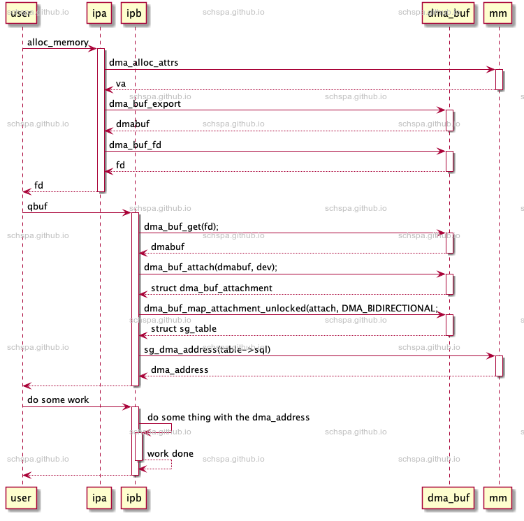

DMA buffer in linux
Table of Contents
官方文档
dma buffer包含的几个部分
- dma-buf
- 通过
sg_table来表示buffer, 文件描述符来进行设备间传递。 - fence
- 通过fence可以确保设备访问完成
- reservation
- fense管理
DMA buffer 使用流程
流程总览

DMA buffer export
dma buffer export 将内存和当前模块建立联系,
如下面代码, 先通过任意api申请出来buffer, 然后通过 dma_buf_export 来导出dmabuf。
static int fastrpc_dmabuf_alloc(struct fastrpc_user *fl, char __user *argp){struct fastrpc_alloc_dma_buf bp;DEFINE_DMA_BUF_EXPORT_INFO(exp_info);struct fastrpc_buf *buf = NULL;int err;if (copy_from_user(&bp, argp, sizeof(bp)))return -EFAULT;err = fastrpc_buf_alloc(fl, fl->sctx->dev, bp.size, &buf);if (err)return err;exp_info.ops = &fastrpc_dma_buf_ops;exp_info.size = bp.size;exp_info.flags = O_RDWR;exp_info.priv = buf;buf->dmabuf = dma_buf_export(&exp_info);if (IS_ERR(buf->dmabuf)) {err = PTR_ERR(buf->dmabuf);fastrpc_buf_free(buf);return err;}bp.fd = dma_buf_fd(buf->dmabuf, O_ACCMODE);if (bp.fd < 0) {dma_buf_put(buf->dmabuf);return -EINVAL;}if (copy_to_user(argp, &bp, sizeof(bp))) {/** The usercopy failed, but we can't do much about it, as* dma_buf_fd() already called fd_install() and made the* file descriptor accessible for the current process. It* might already be closed and dmabuf no longer valid when* we reach this point. Therefore "leak" the fd and rely on* the process exit path to do any required cleanup.*/return -EFAULT;}return 0;}
buffer export流程:
dma_buf_export
DMA buffer fd
DMA buffer get
dma buffer attachment
下面是函数调用流程:
dma_buf_attach
dma_buf_dynamic_attach
dmabuf->ops->attach: fastrpc_dma_buf_attach
这个步骤将dmabuf和当前设备做绑定,
dma buffer map attachment
dma_buf_map_attachment_unlocked
__map_dma_buf
dmabuf->ops->map_dma_buf: fastrpc_map_dma_buf
dma_map_sgtable
struct dma_buf_ops
dma buffer release
DMA buffer组件
DMA buffer API仅仅提供buffer共享的机制,对于buffer如何分配,映射等均无要求。故使用
时需要有外围的管理单元与其组合使用, 才能正常的进行使用。
Exporter
Exporter是buffer的导出方, 驱动可以直接作为buffer的导出方来工作, 但是也可以借助其
他的内存管理单元来完成次操作。
下面是一些内核中现存的dma-buffer导出方:
| Exporter | type | driver location | url |
| dmaheap | buffer management + Exporter | in source tree | kernel source for drivers/dma-buf/dma-heap.c |
| videobuf2 | buffer management | in source tree | kernel source for drivers/media/common/videobuf2/videobuf2-dma-contig.c |
| fastrpc | buffer management + Exporter | in source tree | kernel source for drivers/misc/fastrpc.c |
buffer导出者需要实现 struct dma_buf_ops <dma_buf_ops> 的接口。